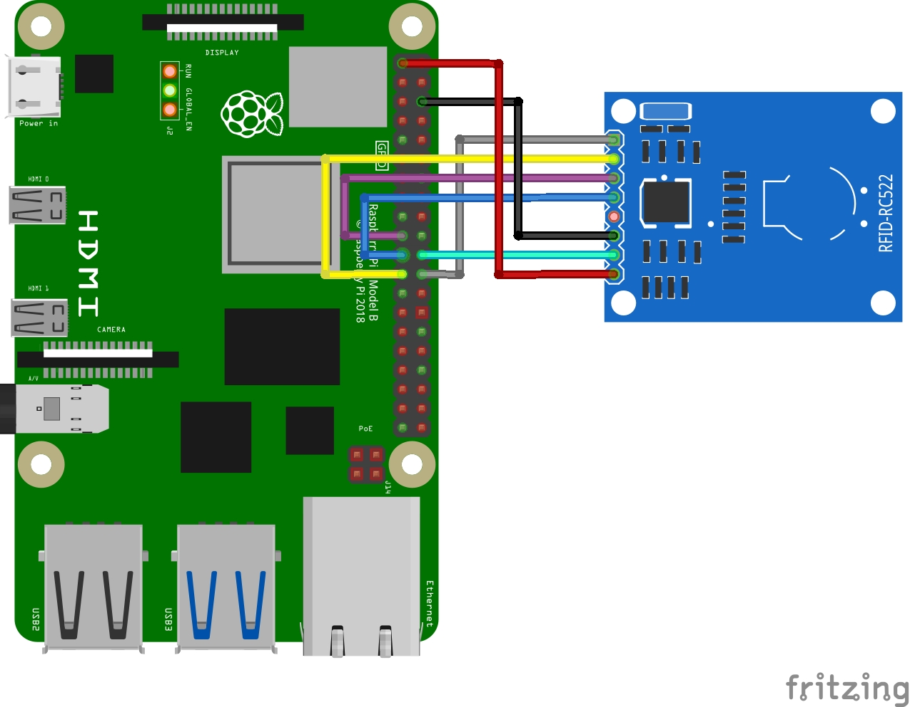

<div class="bg-white">
  <div
    class="mx-auto grid max-w-2xl grid-cols-1 items-center gap-x-8 gap-y-16 px-4 py-24 sm:px-6 sm:py-32 lg:max-w-7xl lg:px-8">
    <div class="prose">
      <h1>Documentation</h1>
      <h2>Introduction</h2>
      <p>This zip file/folder has <code>index.html</code>, <code>Read.py</code>, <code>readme.md</code>,
        <code>rfid-image-2.jpg</code>, <code>rfid-rc522-raspberry-pi-wiring-diagram.webp</code>, <code>main.py</code>and
        <code>Write.py</code>.
      </p>
      <p><code>index.html</code> is the webpage that one will be opening when the program is running to interact with
        the RFID system.
      </p>
      <p><code>Read.py</code> is the test file for reading the RFID tag.
      </p>
      <p><code>readme.md</code> has the step-by-step instructions on how to get started with setting up your pi to run
        the RFID scripts in the folder.
      </p>
      <p><code>rfid-image-2.jpg</code> and <code>rfid-rc522-raspberry-pi-wiring-diagram.webp</code> have images showing
        you how to wire the RC 522 RFID sensor to the Pi.
      </p>
      <p><code>main.py</code> is the main file for running the program.
      </p>
      <p><code>Write.py</code> is the test file for writing data to the RFID tag
      </p>
      <h2>Equipment List</h2>
      <ul>
        <li>Raspberry Pi 4</li>
        <li>RC 522 RFID Sensor</li>
        <li>RFID Tags</li>
        <li>Dupont female to female cables</li>
        <li>Internet Connection</li>
      </ul>
      <h2>Assembling the RFID RC522</h2>
      <p>Ensure pins are soldered onto the board. If you are not able to solder the pins, talk to the nearest
        radio/electricals repair man and they should be able to do it for you. It is a cheap process. Shouldn't be more
        than $1.
      </p>
      <h2>Wiring the RFID RC522 to the Pi</h2>
      <strong>Please do the wiring below with the raspberry pi disconnected from the power</strong>
      <p>On your RFID RC522 you will notice that there are 8 possible connections on it, these being SDA (Serial Data
        Signal), SCK (Serial Clock), MOSI (Master Out Slave In), MISO (Master In Slave Out), IRQ (Interrupt Request),
        GND (Ground Power), RST (Reset-Circuit) and 3.3v (3.3v Power In). We will need to wire all of these but the IRQ
        to our Raspberry Pi’s GPIO pins as shown below
      </p>
      <ul>
        <li>SDA connects to Pin 24. </li>
        <li>SCK connects to Pin 23. </li>
        <li>MOSI connects to Pin 19. </li>
        <li>MISO connects to Pin 21. </li>
        <li>GND connects to Pin 6. </li>
        <li>RST connects to Pin 22. </li>
        <li>3.3v connects to Pin 1. </li>
      </ul>
      <figure>
        
        <figcaption>Image showing how to wire your sensor to the pi (obtained from fritzing)</figcaption>
      </figure>
      <h2>Setting up Pi OS for the RFID RC522</h2>
      <p>Follow the steps below to configure your Raspberry Pi and Raspberry Pi OS to utilize the SPI interface that is
        needed to communicate with the Pi.</p>
      <ol>
        <li>Let’s begin by first opening the raspi-config tool, and we can do this by opening the terminal and running
          the following command.
          <pre>sudo raspi-config</pre>
        </li>
        <li>This tool will load up a screen showing a variety of different options. On here use the arrow keys to select
          <code>5 Interfacing Options</code>. Once you have this option selected, press <code>Enter</code>.
        </li>
        <li>
          Now on this next screen, you want to use your arrow keys to select <code>P4 SPI</code>, again press Enter to
          select the
          option once it is highlighted.
        </li>
        <li>
          You will now be asked if you want to enable the SPI Interface, select <code>Yes</code> with your arrow keys
          and press Enter to proceed. You will need to wait a little bit while the raspi-config tool does its thing in
          enabling SPI.
        </li>
        <li>
          Once the SPI interface has been successfully enabled by the raspi-config tool you should see the following
          text appear on the screen, <code>The SPI interface is enabled</code>.
          Before the SPI Interface is fully enabled we will first have to restart the Raspberry Pi. To do this first
          get back to the terminal by pressing <code>Enter</code> and then <code>ESC</code>.
          Type the following Linux command into the terminal on your Raspberry Pi to restart your Raspberry Pi.
          <pre>sudo reboot</pre>
        </li>
        <li>
          Once your Raspberry Pi has finished rebooting, we can now check to make sure that it has in fact been enabled.
          The easiest way to do this is to run the following command to see if <code>spi_bcm2835</code> is listed.
          <pre>lsmod | grep spi</pre>
          If you see <code>spi_bcm2835</code>, then you can proceed and skip on to the next section. If for some reason
          it had not appeared when you entered the previous command, try following the next three steps.
        </li>
        <li>
          If for some reason the SPI module has not activated, we can edit the boot configuration file manually by
          running the following command on our Raspberry Pi.
          <pre>sudo nano /boot/config.txt</pre>
        </li>
        <li>
          Within the configuration file, use <code>CTRL + W</code> to find <code>dtparam=spi=on</code>.
          If you have found it, check to see if there is a <code>#</code> in front of it. If there is, remove it as this
          is
          commenting out the activation line. If you can’t find the line at all, add <code>dtparam=spi=on</code> to the
          bottom of
          the file.
          Once you have made the changes, you can press <code>CTRL + X</code> then pressing <code>Y</code> and then
          <code>Enter</code> to save the
          changes.
          You can now proceed from Step 5 again, rebooting your Raspberry Pi then checking to see if the module has
          been enabled.
        </li>
      </ol>

      <ol>
        <h2>Installing the Required Packages</h2>
        <li>
          Run the following two commands on your Raspberry Pi to update it and ensure it is running the latest version
          of all the software.
          <pre>sudo apt-get update
sudo apt-get upgrade</pre>
        </li>
        <li>Then run the following command on your Raspberry Pi to install all of the required packages needed for the
          scripts
          <pre>sudo apt install python3-dev python3-pip python3-venv</pre>
        </li>
        <h2>Creating a Virtual Environment</h2>
        Before running any command, ensure you are in the right directory. (This is after unzippping the zip file)
        <pre>cd ~/tag_system_pi</pre>
        <li>
          We now create a virtual environment to run our scripts in by running the command below
        </li>
        <pre>python3 -m venv env</pre>
        <li>

          Once this is done, use the command below to start utilizing it.
          <pre>source env/bin/activate</pre>
          After running the above command, you should see your terminal line starts with <code>(env)</code>.
        </li>

        <h2>Installing the Packages to Use RFID RC522 on the Pi</h2>
        <li>
          Run the following command to install spidev through pip. The spidev library helps handle interactions with
          the SPI.
          <pre>python3 -m pip install spidev</pre>
        </li>
        <li>
          Run the following command to install MFRC522 through pip. This library implements the RFID RC522 interface
          and it is what enables us to read and write data to the RFID Tags.
          <pre>python3 -m pip install mfrc522</pre>
        </li>
      </ol>
      <h2>Running the scripts</h2>
      Before running either script, ensure you are in the right directory, and you are using the virtual environment
      stored within it
      <pre>
cd ~/tag_system_pi
source env/bin/activate
</pre>
      <h3>Write data to A Tag</h3>
      <ol>
        <li> Run the command below to run the program that writes data to a tag
          <pre>python3 Write.py</pre>
        </li>
        <li>
          You will be asked to write in the new data. Type in whatever you want written to the tag. Press
          <code>ENTER</code> when
          you are happy with what you have written.
        </li>

        <li>
          With that done, simply place your RFID Tag on top of your RFID RC522 circuit. As soon as it detects it, it
          will
          immediately write the new data to the tag. You should see <code>Written</code> appear in your command line if
          it was
          successful. You can look at an example output below to see what a successful run looks like.
          <pre>
pi&#64;raspberrypi:~/tag_system_pi $ sudo python3 Write.py
New data:Edward Omondi
Now place your tag to write
Written</pre>
        </li>
      </ol>
      <h3>Read data from A Tag</h3>
      <li>
        Run the command below to run the program that reads data from a tag
        <pre>
python3 Read.py</pre>
      </li>
      <li>
        With the script now running, all you need to do is place your RFID Tag on top of your RFID RC522 circuit. As
        soon as the RFID tag being placed on top is detected, it will immediately read the data and print it back out to
        you.
        An example of what a successful output would look like is displayed below.
        <pre>
pi&#64;raspberrypi:~/tag_system_pi $ sudo python3 Read.py
287853608425
Edward Omondi</pre>
      </li>
      <h2>Serving the UI</h2>
      <p>To run the application, run the following command in your terminal and then go to <a
          href="http://localhost:8000" target="_blank">the app</a> in your browser.</p>
      <pre>python -m http.server > http_server.log & python ws.py > ws.log
      </pre>
    </div>
  </div>
</div>